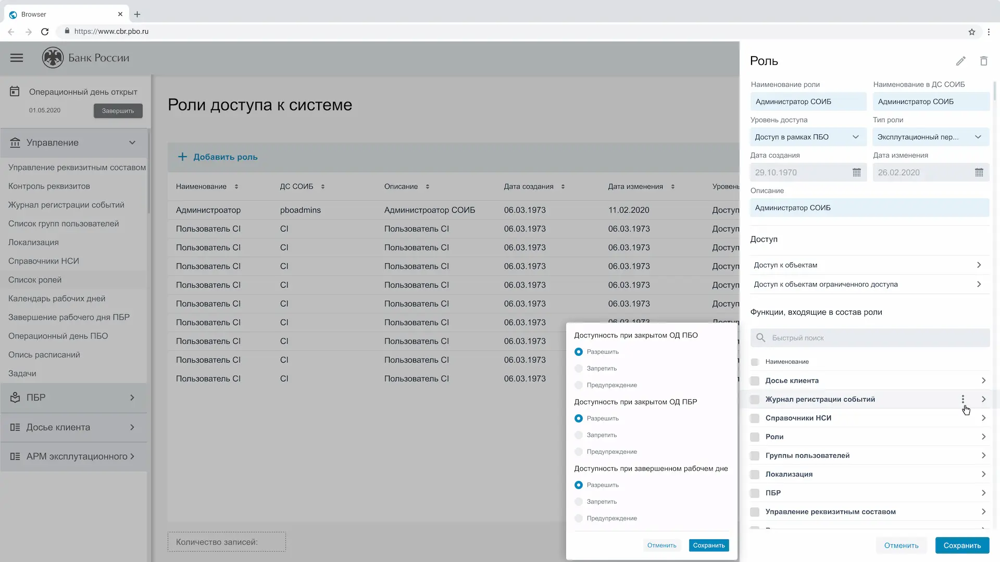
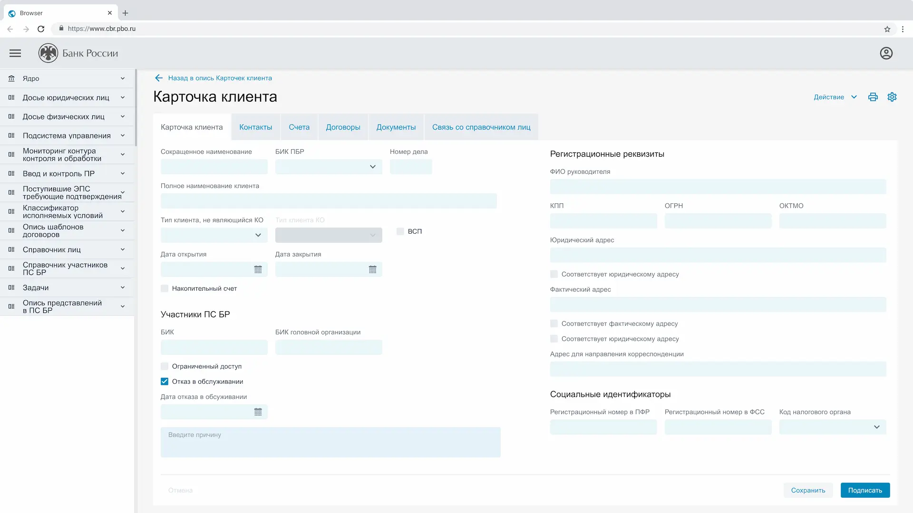
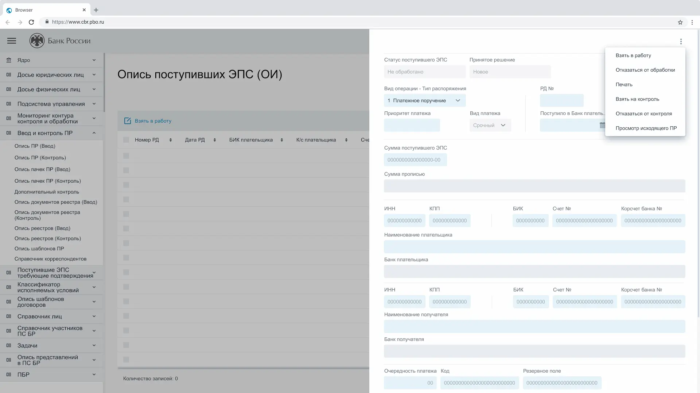
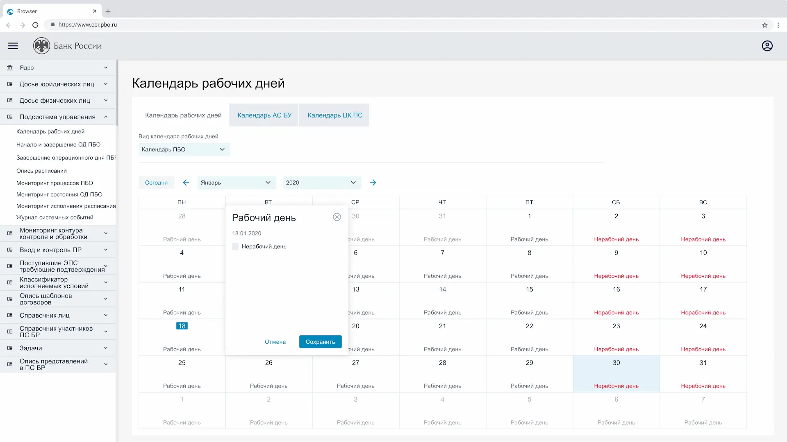
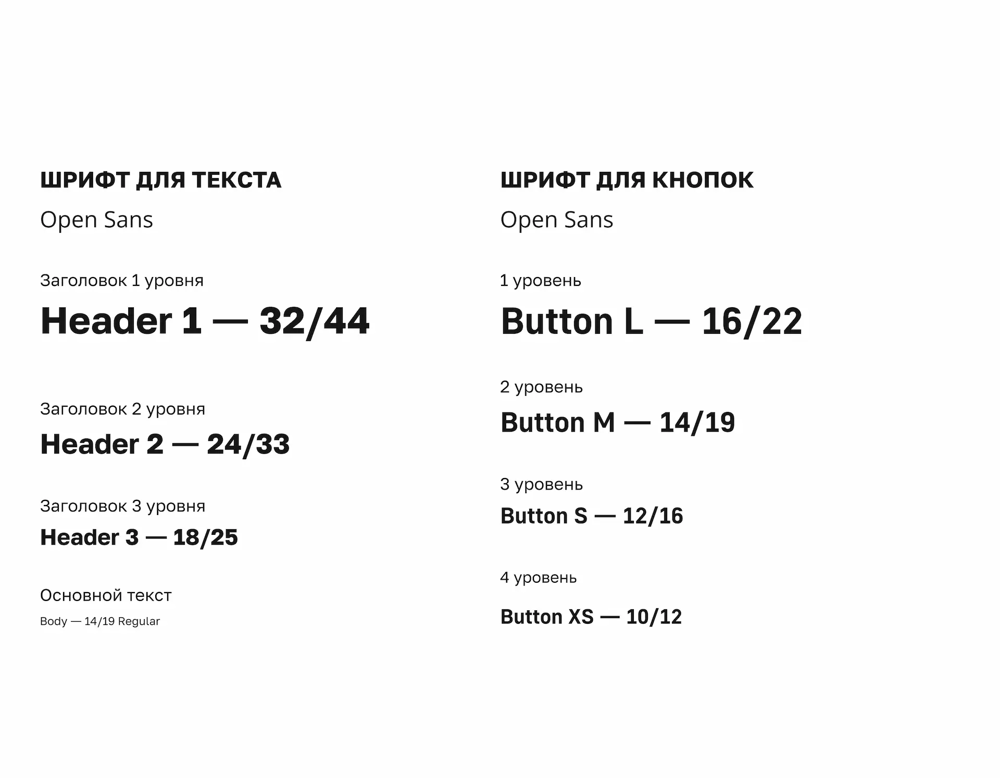
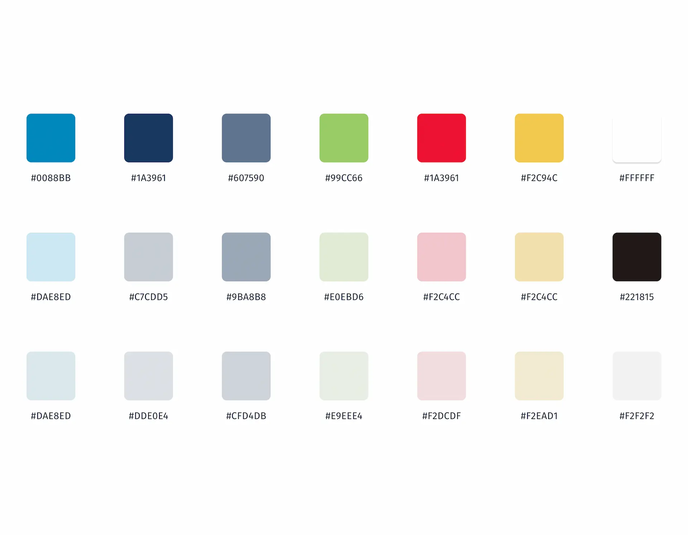
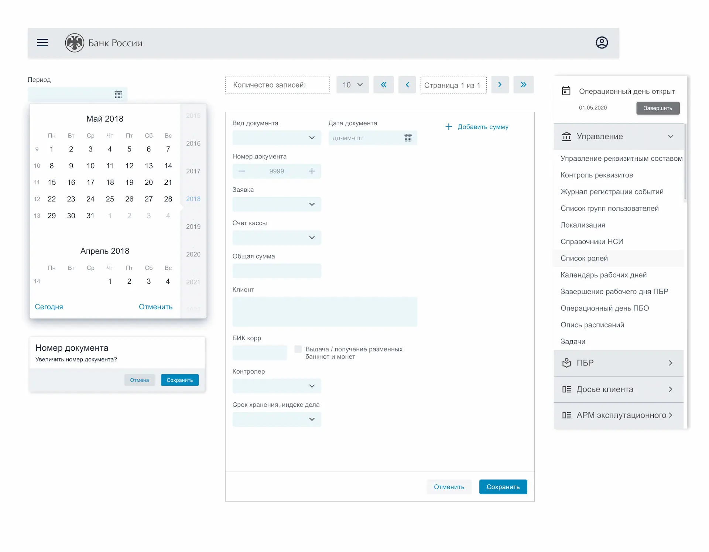
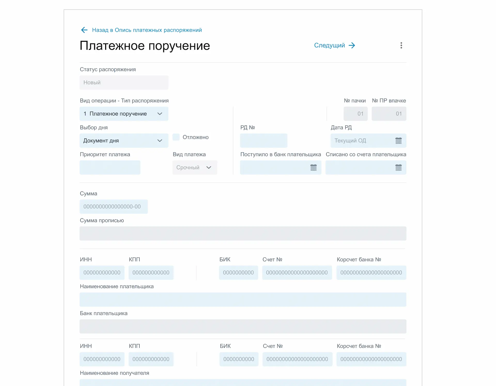

Резюме
Контекст
Платёжная система Банка России — это внутренняя веб-платформа Центрального банка РФ, предназначенная для ежедневной операционной работы, контроля и мониторинга платёжных процессов. Система использовалась внутренними подразделениями ЦБ и обеспечивала работу с большими объёмами данных в условиях строгих регламентов, требований безопасности и высокой критичности ошибок.
Продукт относился к классу аналитических и операционных систем, где ключевую роль играют таблицы, формы ввода и корректная работа с данными.
Роль
- Проектирование UX/UI интерфейсов платформы
- Проектирование и оптимизацию работы с таблицами
- Проектирование сложных форм ввода
- Адаптацию интерфейса под разные пользовательские роли
- Расширение и развитие UI Kit
- Улучшение пользовательских сценариев на основе UX-паттернов и экспертизы
- Взаимодействие с аналитиками и разработчиками на этапе проработки решений
UX-вызовы
- Жёсткие регламенты
- Высокие требований к безопасности
- Многоэтапные согласования
Решения
Архитектура приложения была задана и представляла собой классическую структуру аналитической системы
- Верхняя шапка
- Левое навигационное меню
- Центральная рабочая область
- Объёмные данные
- Частота использования
- Задачи пользователей
- Валидации данных
- Подключения справочников
- Автозаполнения
- Доступ к разделам
- Набор операций в таблицах
- Сценарии
Примеры интерфейса
Интерфейсы проектировались в тесном взаимодействии с аналитиками и разработчиками, с фокусом на снижение ошибок и удобство ежедневной работы пользователей




UI Kit
Для проекта использовался существующий UI Kit, который я расширял и дорабатывал под задачи платёжной системы




Результаты
Платформа была внедрена и использовалась в продакшене
- Система обеспечивала стабильную ежедневную работу пользователей
- Интерфейс был адаптирован под работу с большими объёмами данных
- UI Kit ускорил выпуск экранов и упростил поддержку продукта
- Интерфейс дорабатывался и улучшался на основе пользовательского фидбека
Что дал проект мне как дизайнеру
- Проектирования UX для аналитических систем
- Работы с таблицами и сложными формами
- Взаимодействия с аналитиками и разработчиками
- Принятия решений в условиях ограничений и критичности продукта
Выводы
- Интерфейсы спроектированы с учётом жёстких регламентов, ролей и высокой ответственности пользовательских действий
- Пользовательские сценарии выстроены так, чтобы минимизировать ошибки и повысить предсказуемость работы системы
- UX-решения поддерживают стабильную повседневную работу подразделений без избыточной сложности интерфейса
- Проект стал примером проектирования интерфейсов в условиях строгих ограничений и повышенных требований к надёжности